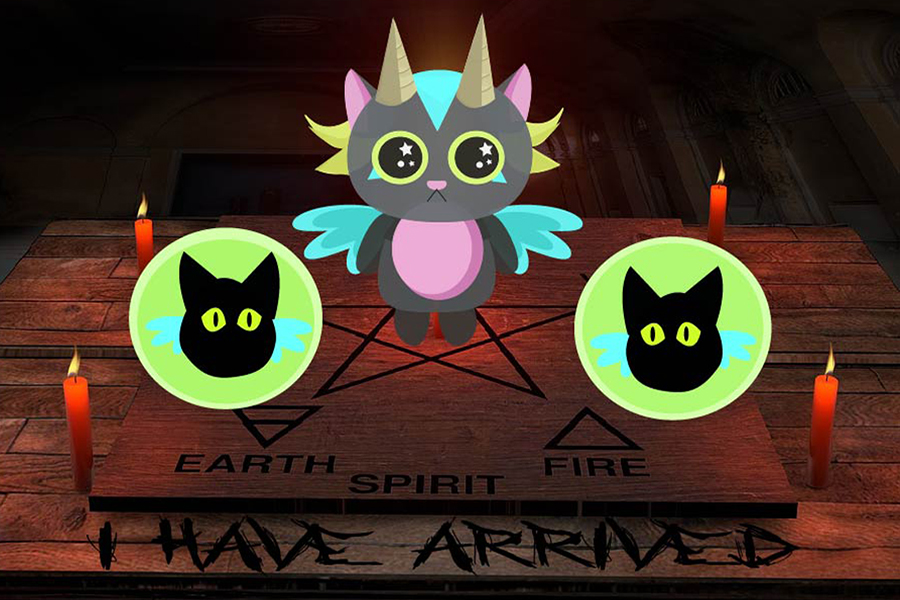

Home | Photoshop | Illustrator | Animate | InDesign | Contact

Originally,the idea for this project was to create a cute cat creature and its minions in an city full of flames, but there were no images that fit well with the cats. I ended up using a background where there was a board used to summon spirits.